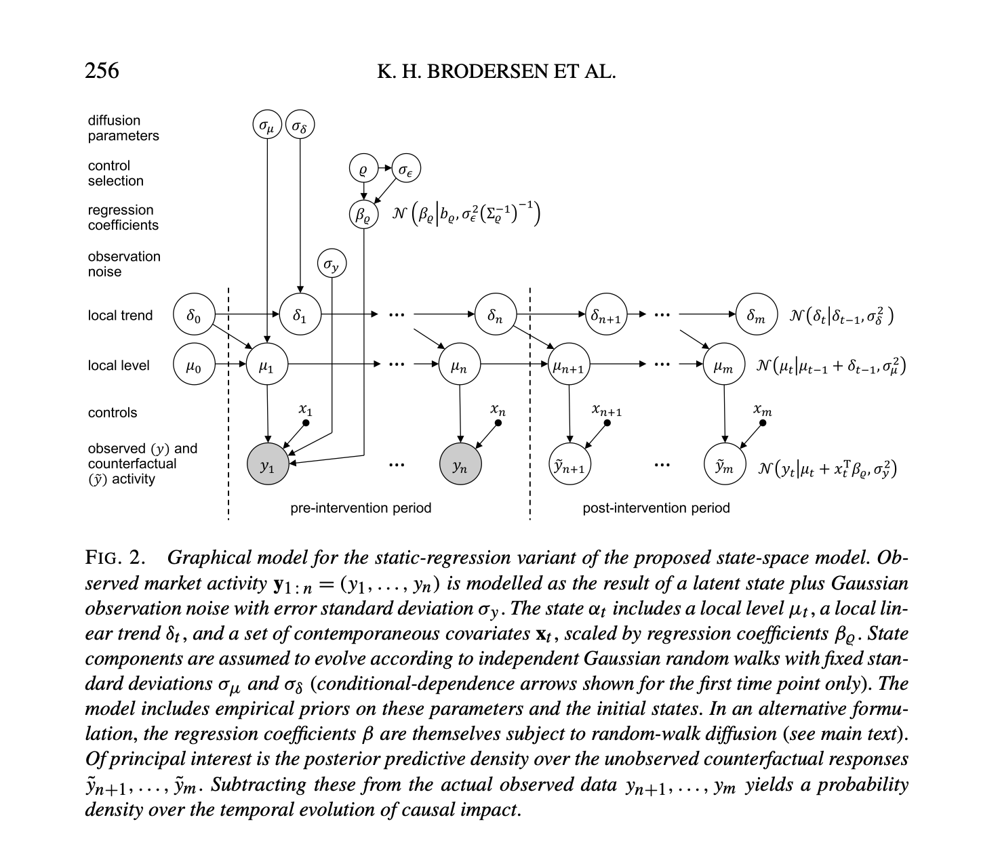

Chapter 10 Intervention Analysis
In this chapter we are going to see how to conduct a intervention analysis.
Intervention analysis is a method introduced by Box and Tiao (1975)7, which provides a framework for assessing the effect of an intervention on a time series under study. As summarized by Box and Tiao: Given a known intervention, is there evidence that change in the series of the kind expected actually occurred, and, if so, what can be said of the nature and magnitude of the change?.
Intervention analysis is a “quasi-experimental” design and an interesting approach to test whether exogenous shocks, such as, for instance, the introduction of a new policy, impact on a time series process in a significant way, that is, by changing the mean function or trend of a time series.
Interventions can have different impacts. For instance, an intervention can have an abrupt impact determining a permanent or temporary change, a sudden and short-lived change due to an event, or a more gradual yet permanent change.

To conduct such an analysis, it is necessary to know, at least, the date of the intervention. Regarding the statistical approach, different approaches are possible. ARIMA modeling is a classic choice, and we can come back to it later. Instead, we start from a more complex Bayesian approach implemented in the convenient package CausalImpact developed and used at Google to estimate causal impacts in a quasi-experimental framework8.

## Loading required package: bsts## Loading required package: BoomSpikeSlab## Loading required package: Boom## Loading required package: MASS##
## Attaching package: 'MASS'## The following object is masked from 'package:dplyr':
##
## select##
## Attaching package: 'Boom'## The following object is masked from 'package:stats':
##
## rWishart##
## Attaching package: 'BoomSpikeSlab'## The following object is masked from 'package:stats':
##
## knots##
## Attaching package: 'bsts'## The following object is masked from 'package:BoomSpikeSlab':
##
## SuggestBurnWe use the simulated dataset used by the Google tutorial on the package, creating two time series \(y\) and \(x\) of length 100, simulating an abrupt intervention at time 71 determining a permanent increment of 10 points in the \(y\) series.
set.seed(1)
x1 <- 100 + arima.sim(model = list(ar = 0.999), n = 100)
y <- 1.2 * x1 + rnorm(100)
y[71:100] <- y[71:100] + 10
dat <- ts.intersect(y, x1)Then, it is necessary to specify the pre-intervention and post-intervention period. In the pre-intervention period no impact is expected.
The function CausalImpact uses the values of the original time series \(y\) in the pre-intervention period, and the predictors correlated to the \(y\) (in this case \(x\)), to forecast the values that \(y\) would have had without the intervention (counterfactual).
To accurately forecast the \(y\) values, which is necessary to obtain valid results from the analysis, it is necessary to have a proper model of the \(y\) series (based on the series itself and its predictors). Then, the differences in the expected (forecasted) \(y\) values without intervention, and the actual \(y\) values following the intervention, are compared in order to estimate the impact of the intervention.
By using the function plot on the resulting model, three plots are visualized:
The first panel shows the data and a counterfactual prediction for the post-treatment period. The second panel shows the difference between observed data and counterfactual predictions. This is the pointwise causal effect, as estimated by the model. The third panel adds up the pointwise contributions from the second panel, resulting in a plot of the cumulative effect of the intervention. (…) the above inferences depend critically on the assumption that the covariates were not themselves affected by the intervention. The model also assumes that the relationship between covariates and treated time series, as established during the pre-period, remains stable throughout the post-period.

Besides plotting the results, it is possible to create a summary of the model, and by adding the argument “report” inside the function summary, a convenient explanations of the results is printed.
## Posterior inference {CausalImpact}
##
## Average Cumulative
## Actual 117 3511
## Prediction (s.d.) 107 (0.37) 3196 (10.96)
## 95% CI [106, 107] [3175, 3217]
##
## Absolute effect (s.d.) 11 (0.37) 315 (10.96)
## 95% CI [9.8, 11] [294.0, 336]
##
## Relative effect (s.d.) 9.9% (0.34%) 9.9% (0.34%)
## 95% CI [9.2%, 11%] [9.2%, 11%]
##
## Posterior tail-area probability p: 0.00101
## Posterior prob. of a causal effect: 99.8993%
##
## For more details, type: summary(impact, "report")## Analysis report {CausalImpact}
##
##
## During the post-intervention period, the response variable had an average value of approx. 117.05. By contrast, in the absence of an intervention, we would have expected an average response of 106.54. The 95% interval of this counterfactual prediction is [105.83, 107.25]. Subtracting this prediction from the observed response yields an estimate of the causal effect the intervention had on the response variable. This effect is 10.51 with a 95% interval of [9.80, 11.21]. For a discussion of the significance of this effect, see below.
##
## Summing up the individual data points during the post-intervention period (which can only sometimes be meaningfully interpreted), the response variable had an overall value of 3.51K. By contrast, had the intervention not taken place, we would have expected a sum of 3.20K. The 95% interval of this prediction is [3.18K, 3.22K].
##
## The above results are given in terms of absolute numbers. In relative terms, the response variable showed an increase of +10%. The 95% interval of this percentage is [+9%, +11%].
##
## This means that the positive effect observed during the intervention period is statistically significant and unlikely to be due to random fluctuations. It should be noted, however, that the question of whether this increase also bears substantive significance can only be answered by comparing the absolute effect (10.51) to the original goal of the underlying intervention.
##
## The probability of obtaining this effect by chance is very small (Bayesian one-sided tail-area probability p = 0.001). This means the causal effect can be considered statistically significant.The authors of the package underline the importance of the statistical assumptions to get valid results, and about possible strategies to ascertain that the assumptions are met, they write the following advice:
Here are a few ways of getting started. First of all, it is critical to reason why the covariates that are included in the model (this was x1 in the example) were not themselves affected by the intervention. Sometimes it helps to plot all covariates and do a visual sanity check. Next, it is a good idea to examine how well the outcome data y can be predicted before the beginning of the intervention. This can be done by running CausalImpact() on an imaginary intervention. Then check how well the model predicted the data following this imaginary intervention. We would expect not to find a significant effect, i.e., counterfactual estimates and actual data should agree reasonably closely. Finally, when presenting or writing up results, be sure to list the above assumptions explicitly, including the priors in model.args, and discuss them with your audience.
Box, G. E., & Tiao, G. C. (1975). Intervention analysis with applications to economic and environmental problems. Journal of the American Statistical association, 70(349), 70-79↩︎
CausalImpact 1.2.1, Brodersen et al., Annals of Applied Statistics (2015). http://google.github.io/CausalImpact/↩︎